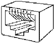

Физическая среда является основой, на которой строятся физические средства соединения. Сопряжение с физическими средствами соединения посредством физической среды обеспечивает Физический уровень. В качестве физической среды широко используются эфир, металлы, оптическое стекло и кварц. На физическом уровне находится носитель, по которому передаются данные. Среда передачи данных может включать как кабельные, так и беспроводные технологии. Хотя физические кабели являются наиболее распространенными носителями для сетевых коммуникаций, беспроводные технологии все более внедряются благодаря их способности связывать глобальные сети.
На физическом уровне для физических кабелей определяются механические и электрические (оптические) свойства среды передачи, которые включают:
Канальный уровень определяет доступ к среде и управление передачей посредством процедуры передачи данных по каналу. В локальных сетях протоколы канального уровня используются компьютерами, мостами, коммутаторами и маршрутизаторами. В компьютерах функции канального уровня реализуются совместными усилиями сетевых адаптеров и их драйверов.
Для организации связи в сетях используются следующие понятия:
Кабель связи - это длинномерное изделие электротехнической промышленности. Из кабелей связи и других элементов (монтаж, крепеж, кожухи и т.д.) строят линии связи. Прокладка линии внутри здания задача достаточно серьезная. Длина линий связи колеблется от десятков метров до десятков тысяч километров. В любую более-менее серьезную линию связи кроме кабелей входят: траншеи, колодцы, муфты, переходы через реки, море и океаны, а также грозозащита (равно как и другие виды защиты) линий. Очень сложны охрана, эксплуатация, ремонт линий связи; содержание кабелей связи под избыточным давлением, профилактика (в снег, дождь, на ветру, в траншее и в колодце, в реке и на дне моря). Большую сложность представляют собой юридические вопросы, включающие согласование прокладки линий связи, особенно в городе. Вот чем линия (связи) отличается от кабеля. Называть кабель связи линией - все равно что асфальт, еще в кузове самосвала, именовать готовой автострадой. Разница примерно такая же.
По уже построенным линиям организуют каналы связи. Причем если линию, как правило, строят и сдают сразу всю, то каналы связи вводят постепенно. Уже по линии можно дать связь, но такое использование крайне дорогостоящих сооружений очень неэффективно. Поэтому применяют аппаратуру каналообразования (или, как раньше говорили, уплотнение линии). По каждой электрической цепи, состоящей из двух проводов, обеспечивают связь не одной паре абонентов (или компьютеров), а сотням или тысячам: по одной коаксиальной паре в междугородном кабеле может быть образовано до 10800 каналов тональной частоты (0,3-3,4 КГц) или почти столько же цифровых, с пропускной способностью 64 Кбит/с.
При наличии кабелей связи создаются линии связи, а уже по линиям связи создаются каналы связи. Линии связи и каналы связи заводятся на узлы связи. Линии, каналы и узлы образуют первичные сети связи.
В качестве среды передачи данных используются различные виды кабелей: коаксиальный кабель, кабель на основе экранированной и неэкранированной витой пары и оптоволоконный кабель. Наиболее популярным видом среды передачи данных на небольшие расстояния (до 100 м) становится неэкранированная витая пара, которая включена практически во все современные стандарты и технологии локальных сетей и обеспечивает пропускную способность до 100 Мб/с (на кабелях категории 5). Оптоволоконный кабель широко применяется как для построения локальных связей, так и для образования магистралей глобальных сетей. Оптоволоконный кабель может обеспечить очень высокую пропускную способность канала (до нескольких Гб/с) и передачу на значительные расстояния (до нескольких десятков километров без промежуточного усиления сигнала).
В качестве среды передачи данных в вычислительных сетях используются также электромагнитные волны различных частот – КВ, УКВ, СВЧ. Однако пока в локальных сетях радиосвязь используется только в тех случаях, когда оказывается невозможной прокладка кабеля, например, в зданиях. Это объясняется недостаточной надежностью сетевых технологий, построенных на использовании электромагнитного излучения. Для построения глобальных каналов этот вид среды передачи данных используется шире – на нем построены спутниковые каналы связи и наземные радиорелейные каналы, работающие в зонах прямой видимости в СВЧ диапазонах.
Очень важно правильно построить фундамент сети – кабельную систему. В последнее время в качестве такой надежной основы все чаще используется структурированная кабельная система.
Структурированная кабельная система (Structured Cabling System – SCS) – это набор коммутационных элементов (кабелей, разъемов, коннекторов, кроссовых панелей и шкафов), а также методика их совместного использования, которая позволяет создавать регулярные, легко расширяемые структуры связей в вычислительных сетях.
Преимущества структурированной кабельной системы.
Выделяют два больших класса кабелей: электрические и оптические, которые принципиально различаются по способу передачи по ним сигнала.
Отличительная особенность оптоволоконных систем – высокая стоимость как самого кабеля (по сравнению с медным), так и специализированных установочных элементов (розеток, разъемов, соединителей и т. п.). Правда, главный вклад в стоимость сети вносит цена активного сетевого оборудования для оптоволоконных сетей.
Оптоволоконные сети применяются для горизонтальных высокоскоростных каналов, а также все чаще стали применяться для вертикальных каналов связи (межэтажных соединений).
Оптоволоконные кабели в будущем смогут составить реальную конкуренцию медным высокочастотным, поскольку стоимость производства медных кабелей снижаться не будет, ведь для него нужна очень чистая медь, запасов которой на земле гораздо меньше, чем кварцевого песка, из которого производят оптоволокно.
Основные поставщики оптоволоконного кабеля для России – Mohawk/CDT, Lucent Technologies и AMP.
Существует несколько различных типов кабелей, используемых в современных сетях. Ниже приведены наиболее часто используемые типы кабелей. Множество разновидностей медных кабелей составляют класс электрических кабелей, используемых как для прокладки телефонных сетей, так и для инсталляции ЛВС. По внутреннему строению различают кабели на витой паре и коаксиальные кабели.
Витой парой называется кабель, в котором изолированная пара проводников скручена с небольшим числом витков на единицу длины. Скручивание проводов уменьшает электрические помехи извне при распространении сигналов по кабелю, а экранированные витые пары еще более увеличивают степень помехозащищенности сигналов.
Кабель типа «витая пара» используется во многих сетевых технологиях, включая Ethernet, ARCNet и IBM Token Ring.
|
||||||||||||||
|
Таблица 6.1 |
Кабели на витой паре подразделяются на: неэкранированные (UTP – Unshielded Twisted Pair) и экранированные медные кабели. Последние подразделяются на две разновидности: с экранированием каждой пары и общим экраном (STP – Shielded Twisted Pair) и с одним только общим экраном (FTP – Foiled Twisted Pair). Наличие или отсутствие экрана у кабеля вовсе не означает наличия или отсутствия защиты передаваемых данных, а говорит лишь о различных подходах к подавлению помех. Отсутствие экрана делает неэкранированные кабели более гибкими и устойчивыми к изломам. Кроме того, они не требуют дорогостоящего контура заземления для эксплуатации в нормальном режиме, как экранированные. Неэкранированные кабели идеально подходят для прокладки в помещениях внутри офисов, а экранированные лучше использовать для установки в местах с особыми условиями эксплуатации, например, рядом с очень сильными источниками электромагнитных излучений, которых в офисах обычно нет.
Кабели классифицируются по категории, указанным в таблице 6.1. Основанием для отнесения кабеля к одной из категорий служит максимальная частота передаваемого по нему сигнала.
Коаксиальные кабели используются в радио и телевизионной аппаратуре. Коаксиальные кабели могут передавать данные со скоростью 10 Мбит/с на максимальное расстояние от 185 до 500 метров. Они разделяются на толстые и тонкие в зависимости от толщины. Типы коаксиальных кабелей приведены в таблице 6.2.
|
||||||||||||||
|
Таблица 6.2 |
Кабель Thinnet, известный как кабель RG-58, является наиболее широко используемым физическим носителем данных. Сети при этом не требуют дополнительного оборудования и являются простыми и недорогими. Хотя тонкий коаксиальный кабель (Thin Ethernet) позволяет передачу на меньшее расстояние, чем толстый, но для соединений с тонким кабелем применяются стандартные байонетные разъемы BNC типа СР-50 и ввиду его небольшой стоимости он становится фактически стандартным для офисных ЛВС. Используется в технологии Ethernet 10Base2, описанной ниже.
Толстый коаксиальный кабель (Thick Ethernet) имеет большую степень помехозащищенности, большую механическую прочность, но требует специального приспособления для прокалывания кабеля, чтобы создать ответвления для подключения к ЛВС. Он более дорогой и менее гибкий, чем тонкий. Используется в технологии Ethernet 10Base5, описанной ниже. Сети ARCNet с посылкой маркера обычно используют кабель RG-62 А/U.
Оптоволоконный кабель (Fiber Optic Cable) обеспечивает высокую скорость передачи данных на большом расстоянии. Они также невосприимчивы к интерференции и подслушиванию. В оптоволоконном кабеле для передачи сигналов используется свет. Волокно, применяемое в качестве световода, позволяет передачу сигналов на большие расстояния с огромной скоростью, но оно дорого, и с ним трудно работать.
Для установки разъемов, создания ответвлений, поиска неисправностей в оптоволоконном кабеле необходимы специальные приспособления и высокая квалификация. Оптоволоконный кабель состоит из центральной стеклянной нити толщиной в несколько микрон, покрытой сплошной стеклянной оболочкой. Все это, в свою очередь, спрятано во внешнюю защитную оболочку.
Оптоволоконные линии очень чувствительны к плохим соединениям в разъемах. В качестве источника света в таких кабелях применяются светодиоды (LED - Light Emitting Diode), а информация кодируется путем изменения интенсивности света. На приемном конце кабеля детектор преобразует световые импульсы в электрические сигналы.
Существуют два типа оптоволоконных кабелей – одномодовые и многомодовые. Одномодовые кабели имеют меньший диаметр, большую стоимость и позволяют передачу информации на большие расстояния. Поскольку световые импульсы могут двигаться в одном направлении, системы на базе оптоволоконных кабелей должны иметь входящий кабель и исходящий кабель для каждого сегмента. Оптоволоконный кабель требует специальных коннекторов и высококвалифицированной установки.
Неэкранированная витая пара (Unshielded Twisted Pair – UTP) – это кабель из скрученных пар проводов.
|  |
| Рис. 6.1 восьми контактные RJ-45 |
Характеристики кабеля:
диаметр проводников 0.4 – 0.6 мм (22~26 AWG), 4 скрученных пары
(8 проводников, из которых для 10Base-T и
100Base-TX используются только 4) Кабель должен иметь категорию 3 или 5 и качество data grade или выше;
максимальная длина сегмента 100 м;
разъемы восьми контактные RJ-45.
В таблице 6.3 приведены сигналы, соответствующие номерам контактов разъема RJ-45.
|
|||||||||||||||||||||||||||
|
Таблица 6.3 |
Тонкий коаксиальный кабель;
Характеристики кабеля: диаметр 0.2 дюйма, RG-58A/U 50 Ом;
Приемлемые разъемы – BNC;
Максимальная длина сегмента – 185 м;
Минимальное расстояние между узлами – 0.5 м;
Максимальное число узлов в сегменте – 30.
Толстый коаксиальный кабель;
Волновое сопротивление – 50 Ом;
Максимальная длина сегмента – 500 метров;
Минимальное расстояние между узлами –: 2.5 м;
Максимальное число узлов в сегменте – 100.
Методы беспроводной технологии передачи данных (Radio Waves) являются удобным, а иногда незаменимым средством связи. Беспроводные технологии различаются по типам сигнала, частоте (большая частота означает большую скорость передачи) и расстоянию передачи. Большое значение имеют помехи и стоимость. Можно выделить три основных типа беспроводной технологии:
радиосвязь;
связь в микроволновом диапазоне;
инфракрасная связь.
Технологии радиосвязи пересылают данные на радиочастотах и практически не имеют ограничений по дальности. Она используется для соединения локальных сетей на больших географических расстояниях. Радиопередача в целом имеет высокую стоимость и чувствительна к электронному и атмосферному наложению, а также подвержена перехватам, поэтому требует шифрования для обеспечения уровня безопасности.
Передача данных в микроволновом диапазоне (Microwaves) использует высокие частоты и применяется как на коротких, так и на больших расстояниях. Главное ограничение заключается в том, чтобы передатчик и приемник были в зоне прямой видимости. Используется в местах, где использование физического носителя затруднено. Передача данных в микроволновом диапазоне при использовании спутников может быть очень дорогой.
Инфракрасные технологии (Infrared transmission), функционируют на очень высоких частотах, приближающихся к частотам видимого света. Они могут быть использованы для установления двусторонней или широковещательной передачи на близких расстояниях. При инфракрасной связи обычно используют светодиоды (LED – Light Emitting Diode) для передачи инфракрасных волн приемнику. Инфракрасная передача ограничена малым расстоянием в прямой зоне видимости и может быть использована в офисных зданиях.
Что такое физическая среда?
Что может быть использовано в качестве физической среды передачи данных?
Какие вопросы при организации сети решаются на физическом уровне?
Что такое кабель?
Что такое линии связи?
Дать определение каналов связи.
Какие проблемы существуют при организации каналов связи?
Перечислить типы кабелей, используемых для передачи данных в сети.
Каково назначение структурированной кабельной системы?
На какие классы подразделяются кабельные системы?
Что такое 10BaseT?
Какой кабель используется в технологии 10Base2?
Какой кабель используется в технологии 10Base5?
Назвать какие типы кабелей используют для передачи данных в сети?
Какие известны кабельные системы Ethernet?
Какие существуют типы оптоволоконных кабелей?
Какие известны технологи беспроводной передачи данных?
В каких случаях используется инфракрасная связь?
Назвать преимущества использования радиосвязи.